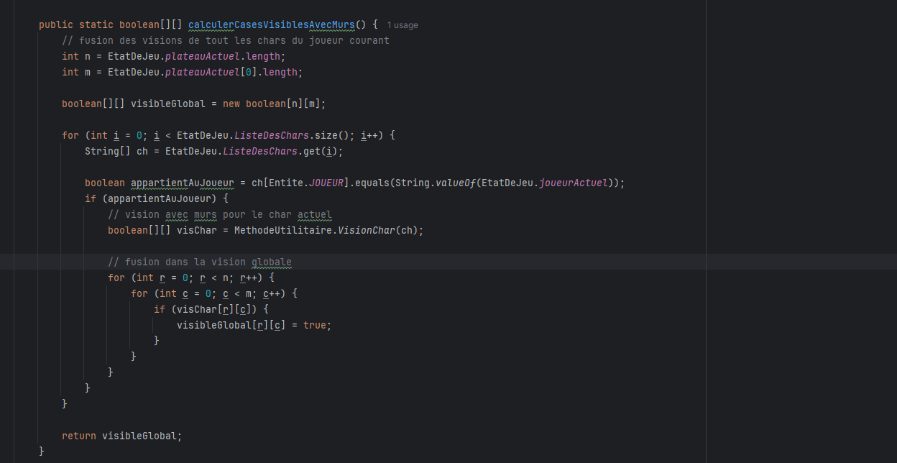
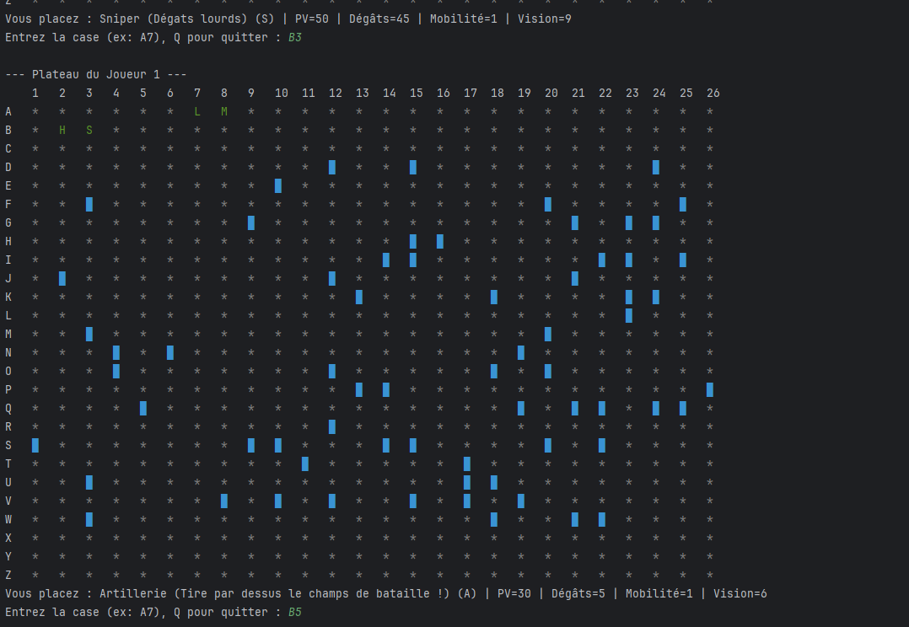

Tank War
L'objectif du projet
L'objectif principal de ce projet est de créer un jeu de tank "Tank War", jouable sur un terminal, où deux joueurs s'affrontent. Pour le réaliser, nous avons utilisé le langage Java de manière procédurale, sans faire appel à la Programmation Orientée Objet (POO).
Trace de code
Voici la méthode calculerCasesVisiblesAvecMurs(). Elle a pour rôle de générer la vision
globale du joueur actif : elle parcourt la liste de ses chars, calcule le champ de vision de chacun en
tenant compte des murs, puis fusionne ces données dans une matrice globale.

Calcul et fusion des champs de vision individuels dans une matrice booléenne globale.

Le résultat à l'exécution : l'affichage textuel de la grille dans le terminal. et cache les chars qui ne sont pas dans la portée de vue d'un de nos char
Si c'était à refaire...
Aujourd'hui, si je devais refaire ce projet avec mon camarade, notre gestion du temps serait bien plus efficace. Nous sommes désormais capables de mieux évaluer et répartir les tâches réalisables dans le temps imparti. De plus, grâce à nos nouvelles connaissances, nous utiliserions la Programmation Orientée Objet (POO) pour structurer, optimiser et rendre notre code beaucoup plus robuste.
Compétences exprimées avec les codes et libellés exacts des composantes essentielles du référentiel (BUT Informatique), chacune appuyée sur une trace concrète du projet.
- Réaliser — CE1.03 « en appliquant les principes algorithmiques » : Développement d'algorithmes spécifiques pour gérer la logique de tir et détecter les collisions avec les chars adverses sur la grille de jeu.
- Réaliser — CE1.04 « en veillant à la qualité du code et à sa documentation » : Application de bonnes pratiques de développement (code structuré et documenté) pour garantir la lisibilité par un tiers, avec la mise en place de tests vérifiant la robustesse des algorithmes.
- Réaliser — CE1.06 « en choisissant les ressources techniques appropriées » : Utilisation du langage Java orienté objet, particulièrement adapté pour modéliser la logique de ce type de jeu.
- Optimiser — CE2.04 « en justifiant les choix et validant les résultats » : Optimisation du code pour garantir une exécution rapide et efficace des actions de jeu, dont les résultats ont été validés de manière automatisée grâce au framework de tests unitaires JUnit.
- Collaborer — CE6.01 & CE6.04 « en inscrivant sa démarche au sein d'une équipe » / « communication efficace » : Projet réalisé en binôme nécessitant une organisation rigoureuse et une communication constante pour développer en parallèle de façon fluide et sans créer de conflits dans le code.